|
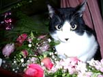 |
|
| 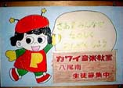 |
七年前の春、新人講師だった私は、開設したばかりのこの八尾南教室で、初めての一日体験レッスンをしました。 あの頃と同じ場所とは思えないぐらい、今では、こんなに明るく、元気あふれる楽しい教室になりました。 |
|
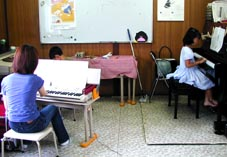 さんきくん、ひろきくん、あやめちゃんは 音を合せるという意識が強いので、 一緒に入って弾いている先生も 楽しんでおります。 |
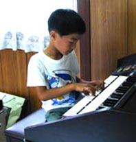 エクスピアリドーシャス |
|
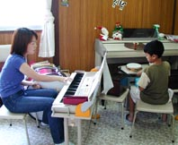 |
今日は、タンバリンや箱だいこを ならべています。 先生の左手の大太鼓は、 さんきくんの足のbassdrumの かわりなんです。 まちがえると、さんきくんに チェックされている先生です。 |
|
九人という大編成でリトルマーメイドの 「アンダー・ザ・シー」に挑戦です。 三、四年生のメンバーの中に 一人さくらちゃんもとっても真剣な表情で マラカスでリズムをならしています。 |
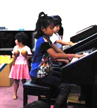 |
|
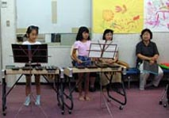 木琴の二人です。木琴のハーモニーが この曲の海の中の演奏のイメージを 作り出しています。 |
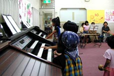 難しいことを一つ一つクリアしてきましたが この日はとくにたいへんで、ももかちゃんも 涙をこらえてがんばりましたね。 |
|
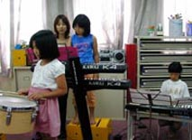 この曲をする事に決まったとき、 シンコペーションだらけのベースを 先生にしょうかと思ったのですが、 しょうこちゃんの見事なリズム感で この曲をしっかり支えてくれています。 |
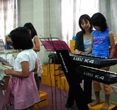 指導で、信じられないほどむずかしいことを しっかりと弾いています。 |
|
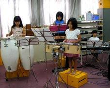 息がぴったりで、ばっちり決まります。 みんなの力が一つになって、ふしぎな 音楽ができあがろうとしています。 |
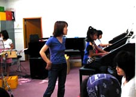 先生、ドラムをたたくのをやめました。 ‥‥‥。 |
（7月５日） |
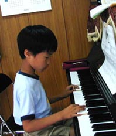 ひろきくん。地面の下の国。 あれっまん中のところを忘れたぞ・・ |
|
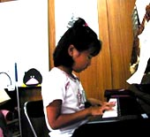 |
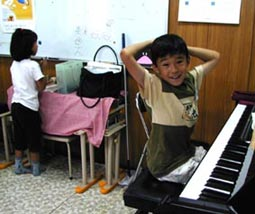 |
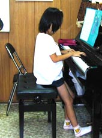 なるみちゃん。ウィンナーワルツ。足をのばして。。 |
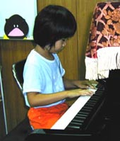 もう少しで完成ですよ。がんばって。 |
|
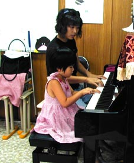 ちゅーりっぷ。さくらちゃん、お母さんのピアノに合わせてあげてね。 うん、わかった！ |
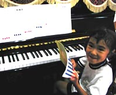 楽しみに、今は、ひげじいさんで 音符のお勉強。 |
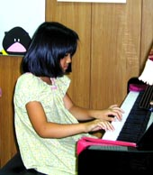
|
(でんでん虫の独り言より) 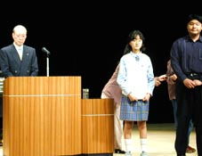 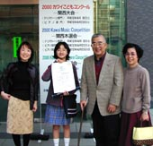 会場で演奏を直接耳にしたでんでん虫は、演奏が終わった時から、もしかしたら恵美子さんが最優秀賞だと思ってはいました。後で講評の言葉を聞いて「なるほど、それなら恵美子さんはその通りの演奏をしていた」と思ったのです。 |
|